| 6.Process
or Product Monitoring and Control
6.3. What are Univariate Control Charts? 6.3.1.3. Cusum Control Charts |
|
| CUSUM is an efficient alternative to Shewhart procedures | CUSUM charts, while not as
intuitive and simple to operate as Shewhart charts, have been shown to
be more efficient in detecting small shifts in the mean of a process.
CUSUM works as follows: Let us collect k samples, each of size n,and compute the mean of each sample. Then the cumulative sum (CUSUM) control chart is formed by plotting one of the following quantities: |
| Definition of cumulative Sum and the V-mask |
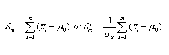 In order to determine whether a process is out of control we use the V Mask, proposed by Barnhard in 1959. A V Mask is a graph in the form of a V on its side that is superimposed on the graph of the cumulative sums. 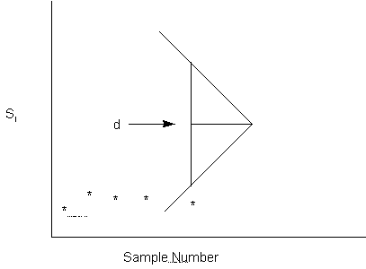 The distance d, between the vertical line and the apex of the V is called the lead-distance. The angle between either arm and d is referred to as theta (q). q and d are the parameters of the V Mask. It works as follows: Place the V Mask with its vertical axis on the last point. If all of the previous points lie within the two arms of the mask, the process is in control. Otherwise (even if one point lies outside) the process is out of control. The performance of the Cusum Chart is determined by the parameters of the V mask. The V Mask is defined by the lead distance, d, and the angle between the arms, q.
|
| Lead distance, d, and angle q for a V mask | Then
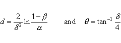 If b is small (say less than .05) we obtain: 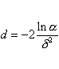 Let us illustrate the construction of a Cusum Control Chart with the following set of data: |
| Example of CUSUM chart |
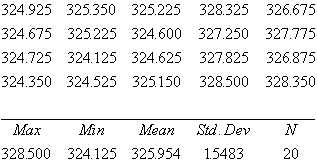 :The sample size, n, = 4.
The estimated standard deviation of the process = 1.27. This was obtained from averaging the standard deviations of the 20 groups (which were available, but are not listed here) and adjusting by the c4 factor .Then the estimate for the standard error of the mean = 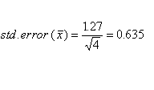 S1 = (324.925 - 325) = - 0.0750
The cusums in row by row order, are: -0.075 -0.400
-0.675 -1.325
-0.975
The lead distance is: 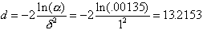 and the angle of the V mask is: 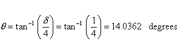 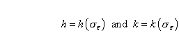 :k = d/2 = .5 and k (0.635) = 0.375 h = d k = 6.6077, and h(0.635) = 4.1959 Now we position the V mask:
Rise = h + (n - p) k
For example, the rise at the last point is h +(20-20)(k) =
h
Draw a horizontal line from (0, 19.08) on the vertical or Y-axis to coordinates (33.22, 19.08) on the horizontal axis. . (This is optional, it makes the graph look a little nicer...) Now we compute the rise as (run)(k) = 33.22 (0.3175) =
10.54
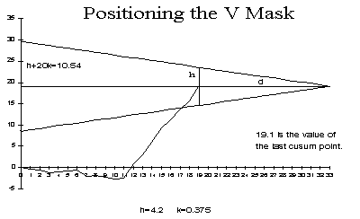 We now are ready to construct the Cusum Control Chart. In doing so, it is customary to NOT show the portion of the V Mask that lies to the right of the last point, e.g. the line labeled h . 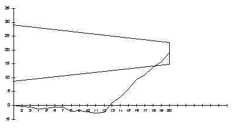 Since not all the data points lie within the arms of the V Mask, the process is out of control as of the time of the last point. Analyzing ARL's for CUSUM control charts shows that they are better than Shewhart control charts when it is desired to detect small shifts (2 sigma or less) of the mean. Tabular form of the V mask
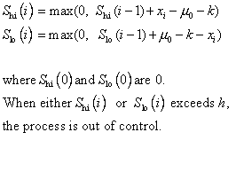
d q(deg) m0 (TARGET)
H K (H/d)
Increase in mean decrease in mean
|